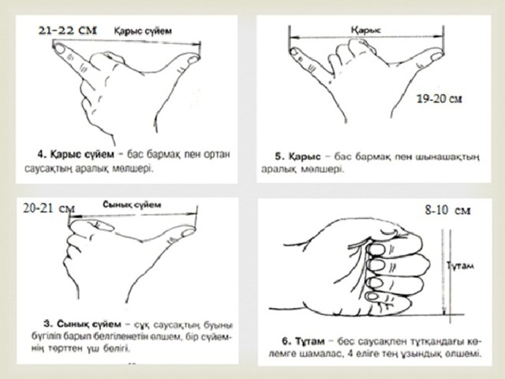

Қазақтың барлық сөзінің шегі, өлшемі болған. Өлшем бірліктерін білдіретін қазақтың көне сөздері өте көп кездеседі. Қазақ халқының мақал–мәтелдерінде де өлшем сөздер жиі кездеседі. Мәселен: «Екі елі ауызға, төрт елі қақпақ», «Ауру батпандап кіреді, мысқалдап шығады», «Көңіл азып, тон тозса, берген көйлек кез болар».
{kind=link}
Ұзындық өлшемдері:
Екі елі, үш елі, тұтам, сынық сүйем (14–15см), сүйем (17-18см), қарыс, кере қарыс (20-22см), кез (50см), аршын (75см), құлаш (1,80-2м), жебе бойы, найза бойы
{kind=link}
{kind=link}
Қашықтық өлшемдері:
Адым (қадам) (1м), таяқ тастам (10-15м), әй дейтін жер(100 м), дауыс жететін жер(250-300 м), шақырым (1км), иек астында, бір төбе астында(4-5км), қозы көш жер (5-6км), көз ұшында (6-7км), тай шаптырым (4-5км), құнан шаптырым (8-10км), ат шаптырым (25-30км), бір күндік жер, айшылық жол, түстік жер, көш жол
{kind=link}
Көлемді білдіретін өлшемдер:
Бір шымшым, бір шөкім, бір уыс, қос уыс, бір тілім, (нан), бір түйір, бір қолтық, бір шүйке, бір құшақ, бір қап, бір шелек, бір қасық, бір тамшы, бір арқа, бір шана, бір арба, бір табақ, бір шоқ( үкі, тал), бір топ (адам), бір қарын, бір сандық, бір қалта, тағы сол сияқты. Мал саны мен көлемін де осылай шамамен ажыратады. Яғни бір отар, бір қора, бір табын, бір үйір, оншақты, жиырма шақты, заттың көлеміне, аумағына кейде бармақтай, шынашақтай, жұдырықтай, құмалақтай, етектей, алақандай деген теңеу сөздер де қолданыла береді.
Салмақ өлшемдері:
Салмақ өлшемдерін халық былайша жіктеген.
Мысқал - 1 грамм, қадақ - 400 грамм, келі - 1 келі, пұт -16 килограмм, батпан -100 келі, қоржын - 40 келі, 1 пітір - бидай шамамен 3 кг, 1 ширек шай - шамамен 250 г, 1 әшімөңке шай - шамамен 50 г, 1 таймөңке шай - шамамен 25 г, 1 қайнатым - шай шамамен 6,5 г, 1 шөкім тұз - шамамен 12,5 г.
Бұл өлшемдер мен бірге халық салмағынан жер ойылғандай, түйеге жүк болғандай деген сияқты бейнелеу, теңеу сияқты айшықты сөз өрнектерін қолданып ауыр, жеңіл деген сөздерді де пайдаланады.
{kind=link}
Уақыт өлшемдері
Қазақ халқы жылды, тоқсанды, айды, аптаны, тәулікті бөлудің шаруашылыққа сай реті мен ыңғайын да орайластыра келтіре білді. Ал мерзім, мезгіл өлшемдеріне келгенде халық өлшемі мен атауы да бай. Ұлттық ұғымда мерзім – уақыттың, мезгілдің шамасы мен ұзақтығын білдіреді (Мысалы: бие сауым, күн, ай, тоқан).
Бір сәт, қас қағым, ә дегенше (1 сек), сүт пісірім (5-10 мин), бие сауым (1,5 сағат), ет пісірім (2,5-3 сағат), жарты күн, бір түн (тәуліктік) (24 сағат), апта (7 күн), ай (30-31 күн), тоқсан (3 ай), жыл (365 күн) немесе 12 ай, ғасыр (100 жыл). Адам өмірі де: жас (1 жыл), мүшелмен (12 жас) есептеліп, бір мүшел (13 жас), екі мүшел (25 жас), үш мүшел (37 жас), төрт мүшел (49 жас), т.с.с. бөлінеді. Мерзім өлшеміне күн, ай аттары да жатады.
Мезгілді білдіретін өлшемдер:
Елең-алаң, құланиек, таң сәрі, құлқын сәрі, таң бозара, алакеуім, таң біліне, таң ата, күн шыға, күн қызара, күн қыза, күн көтеріле, күн арқан бойы көтеріле, түске жақын, тал түс, шаңқай түс, талма түс, сәске түс, түс ауа, түс қайта, бесін, екінді, кеш, көлеңке басы ұзара, күн бата, ымырт, іңір, апақ-сапақ, жөппелдеме, намаздыгер, ақшам (намазшам), ақшам жамырай, бей уақыт, қас қарая, түн қараңғысы, ай туа, түн ортасы, жұлдыз сөне.